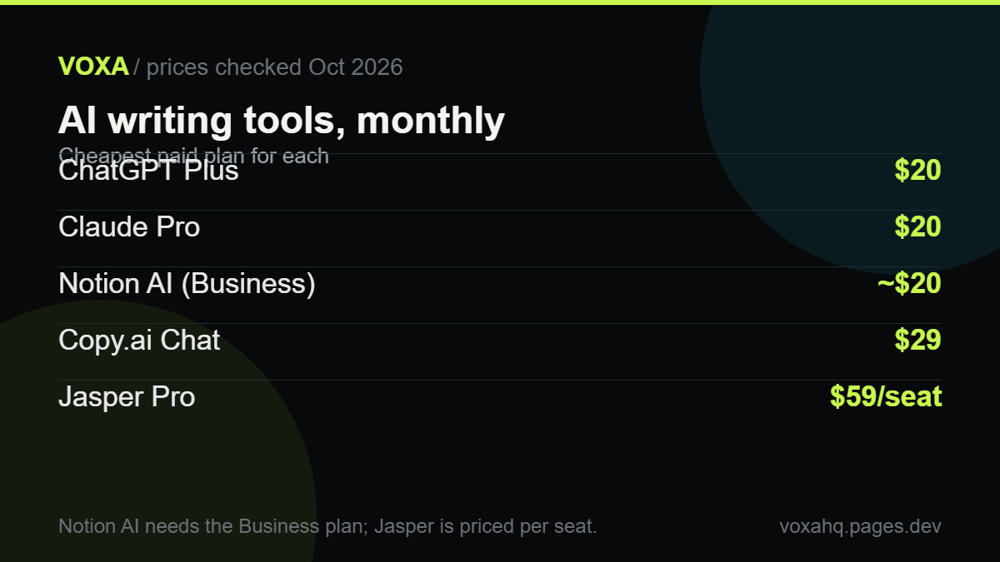

Best AI writing tools for blog posts in 2026

Quick answer
Get one $20 assistant plan. For most blogs that is the whole budget; anything above it buys team features, not better writing.
- ChatGPT Plus $20/mo and Claude Pro $20/mo (about 7 yearly) are the two to pick from.
- Jasper Pro starts at $59 per seat per month and only earns its price for teams sharing a brand voice.
- Copy.ai Chat is $29/mo; its real automation starts at about
,000/mo.- AI content is allowed on an ad-supported blog if the page is genuinely useful and original.
If you only want one answer: get ChatGPT Plus or Claude Pro. Both are $20 a month, and for most blogs that's the whole budget you need. Everything above $20 is buying team features, not better writing.
That's the short version. Here's the longer one, with the prices we checked on the vendors' own pages in October 2026. Plans change fast, so check again before you pay.
Tool Price Good at Where it hurts ChatGPT Plus $20/mo Outlines, research, quick rewrites Loses your voice in very long drafts Claude Pro $20/mo, about $17 if you pay yearly Following your rules, editing your draft Tighter limits on heavy writing days Jasper Pro $59 per seat/mo, billed yearly Keeping several writers on one voice Expensive for one person Copy.ai Chat $29/mo ($24 yearly) Cheap chat across several models Real automation starts at $1,000/mo Notion AI Business plan, about $20 a user/mo yearly Writing where your notes already live You pay for the whole workspace What actually matters
Four things. In this order.
Can it follow instructions? You'll give it rules: this length, this tone, never use these words. Most tools drift somewhere around the 800-word mark. That drift is the whole game.
Can you check its facts? Anything it researches needs a source, because your name goes on the page, not its.
Does it edit or replace you? The best results come from you writing the argument and the tool tightening it. If you ask for a finished post from one line, you'll get something that sounds like everyone else's.
Is the price predictable? A flat $20 is easy. Credit systems that run dry halfway through an article are not.
The tools, one by one
ChatGPT Plus, $20/month
The safe default. Use it to build outlines from a keyword, to pull gaps out of a competing page you paste in, and to turn your rough notes into a first draft. It gets generic the moment you stop feeding it your own material, which is true of all of them.
Claude Pro, $20/month (about $17 yearly)
Pick Claude when you have a long list of rules. Give it a fifteen-line style sheet and it tends to hold it. ChatGPT will happily ignore rule eleven if it thinks the sentence reads better without it. You pay for that discipline with tighter usage windows, so if you write for six hours straight, expect to hit the wall.
Jasper Pro, $59 per seat per month
Jasper isn't really competing with ChatGPT for one writer. It sells control: brand voices, style guides, agents that run the same job repeatedly. If two or three people write for your site and the tone keeps drifting, that control is worth real money. If you write alone, it isn't.
Copy.ai Chat, $29/month
Handy if several people want to chat with different models for one flat fee. Just don't buy it expecting cheap automation. The workflow tiers start at about $1,000 a month, which is a different product for a different buyer.
Notion AI, on the Business plan
The appeal is context. If your briefs and research already sit in Notion, the AI can see them instead of you pasting the same background in every time. You're paying for the workspace though, so it only makes sense if you were going to pay for Notion anyway.
A workflow that beats "write me a post"
I've watched a lot of people type "write me a 1,500 word blog post about X" and then wonder why the result is boring. Try this instead.
- Write five bullets in your own words. This is the part that makes the page yours.
- Ask it to turn those bullets into headings, one sentence each, and tell it not to add new claims.
- Draft one section at a time. Long single prompts drift.
- Check every number yourself. If you can't find the source, cut the number.
- Last pass: ask it to shorten by 20% without losing a claim. Shortening is where it's genuinely useful.
How to stop drafts sounding like AI
- Delete the opening line that repeats the question. Start with the answer.
- Swap adjectives for numbers. "Much faster" becomes "40 seconds instead of 6 minutes".
- Ban seamless, powerful, robust, elevate, unlock. They're a tell.
- Add one thing only you know. A screenshot. A mistake you made. A number from your own account.
- Mix sentence lengths on purpose. AI writes everything at the same medium length.
What we'd pay for
One $20 assistant plan. Nothing else until you hit a wall that $20 can't solve. That wall is usually brand consistency across writers, or hundreds of posts a month, and that's when tools like Jasper start to earn their price.
If you're automating the publishing step too, compare the automation platforms here.
One note: AI pricing moves fast. We read these numbers off the vendors' own pricing pages in October 2026, so check the current price before you buy.
Where to check the current price
These are the official pages we read while writing this guide. Plain links, no tracking, no middlemen. If a number here ever disagrees with what you see, trust their page and tell us so we can fix it.
- ChatGPT pricing (OpenAI)
- Claude pricing (Anthropic)
- Google AI plan prices
- Jasper pricing
- Copy.ai prices
- Notion pricing
Frequently asked questions
Is ChatGPT enough, or do I need a paid writing tool?
ChatGPT Plus is enough for most blogs. You'd only step up to something like Jasper when several writers need to share one voice, or when you want repeatable jobs running without you.
Can I put AI-written content on a blog that runs ads?
Yes, if the page is genuinely useful. Google's rules target thin, unoriginal pages, not the use of AI. Add your own experience and check your facts.
Which one follows a long style guide better?
Claude, in our tests. Give both a fifteen-line rule sheet and Claude holds the rules more reliably. ChatGPT is close and usually faster.
How much should a solo blogger spend?
Under $25 a month. One assistant plus free keyword research gets you publishing weekly. Anything more should be paying for a team feature you can name.
Will these tools get me ranked on Google?
No. They write drafts. Ranking still comes down to matching search intent, having something original to say, and internal links. Treat the tool as a writing assistant, not a strategy.